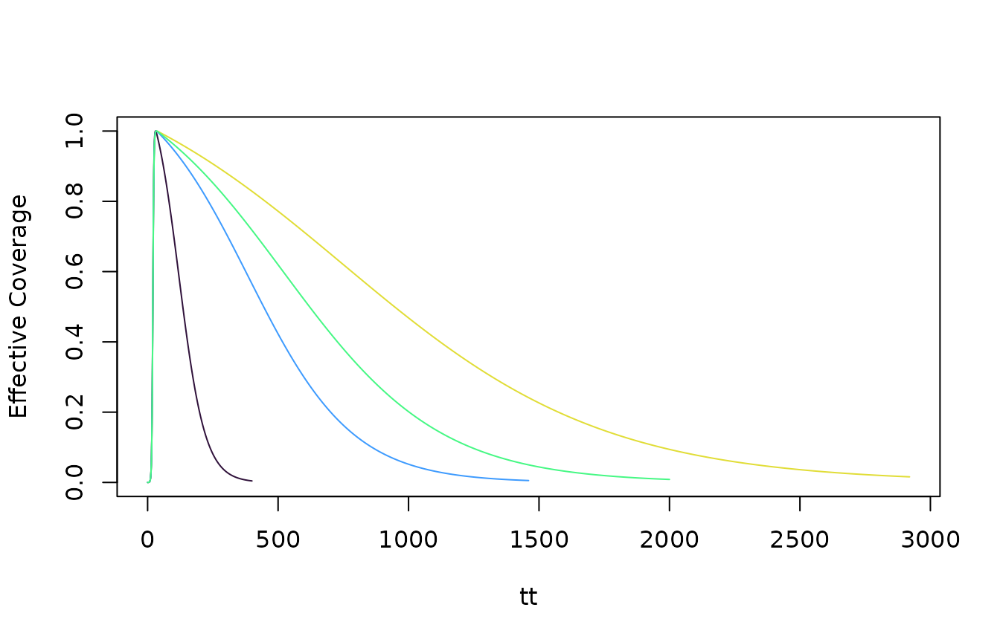

SimBA uses Events as a way of storing information about the
history of vector control and creating scenario planning. An event is a
perturbation, and the events object
(xds_obj$events_obj) stores information about three kinds
of events:
events_obj$irsstores information about IRS;events_obj$bednetstores information about mass bed net distributions;events_obj$mass_treatstores information about mass bed net distributions;
These events are used in conjunction with multiround to
simulate vector control and mass treatment as perturbations. Utilities
have been developed to fit models and estimate the effect sizes of
events in the past, and to handle scenario planning.
Bed Net Events
The function call is:
xds_obj <- setup_bednet_events(xds_obj, start_day, net_type,
coverage_profile, peak_access, event_length)which creates xds_obj$events_obj$bednet and stores:
bednet$start_day– the Julian date of the start of a bed net distributionbednet$net_type– the type of net usedbednet$coverage_profile– a string that specifies a coverage profile (seebednet_profiles,below)bednet$peak_access– the highest bed net access achievedbednet$event_length– the number of days for the event (the default is 20 days)
Bed Net Profiles
A bed net profile is a function that models bed net effective coverage (access times use) in the wake of an event.
library(ramp.xds)
library(ramp.control)
#devtools::load_all()
clrs=viridisLite::turbo(6)
show_bednet_profile(730, 1/500, clr = clrs[4])
show_bednet_profile(100, 1/50, clr = clrs[1], add=T)
show_bednet_profile(365, 1/200, clr = clrs[2], add=T)
show_bednet_profile(500, 1/300, clr = clrs[3], add=T)